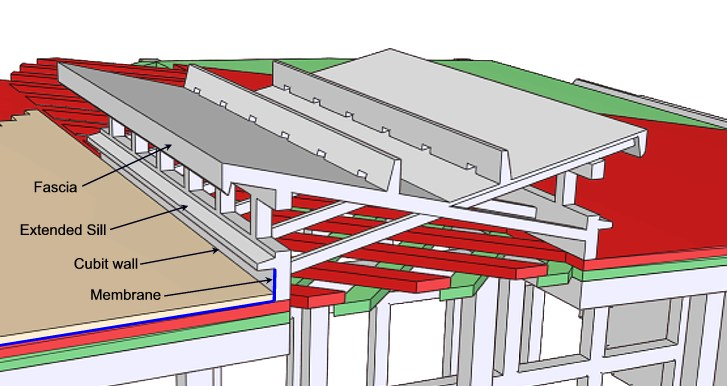
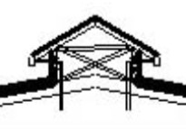

COPYRIGHT Tim Lovett © July 2004
..
Completing the Monocoque
The trick here is to tie the roof together across the skylight. The roof uses 4 layers of planking but is quite different to the walls. Here is summary of design decisions;
The roof has to be fairly thick to avoid bucking in sag (which puts the roof into compression). Curvature of the roof also adds buckling resistance, similar to the curvature in a tape measure.
Since the roof must be thick it can span between bulkhead frames unsupported. This can be accomplished by placing the first layer of planking edgewise. Adjacent planks are joined by the same dowel method (timber nails) as the rest of the hull, but the planking is now face-to-face rather than edge-to-edge. The fixing of the planking to the bulkhead frames is now more difficult - using 'skew nailed' spikes driven from above, and possibly one or two straps at each frame. The less secure attachment to internal framing is acceptable in the roof since the curvature helps to holds it down and the wave slamming loads are not a major issue.
The next two layers (green and red) are laid diagonally. By allowing some planks to carry right through the skylight area these layers are effectively completing the monocoque structure. This design can be tweaked by adjusting the lattice spacing. Since the design utilizes timber in tension ( 87MPa for Douglas Fir ) and the planks are very long, the lattice could be quite minimal.
For maximum light transfer the through planks might be trimmed down and slightly rounded over the skylight. The reduced section would suffice because there is no need for fixings in the gap. A single through plank would then resemble a tensile test specimen. (It does the same job).
The main waterproofing membrane (e.g. pitch impregnated woven cloth) is laid over the top of the third roof layer (red), and turns up the skylight wall to become flashing. (More skylight details below).
The final roof layer (tan) protects the membrane.
Get the big picture
The Skylight (tsohar 'noon light')
'V' Roof
The 'noon light' is supposed to let the light in. There's are a few problems - it's raining, the waves are splashing, it could be windy and the boat is rocking. The first attempt at a solution goes something like this.

Pitched roof
The alternative is the more conventional pitched roof with gutters for collection of drinking water.

The main advantage of a pitched roof is that it dumps water straight over the gutter when rain is extreme. The entire skylight roof width shown above is around 6m (20ft), about the same scale as a double garage. The disadvantage is the blocking of light and the construction of gutters. The light blockage could be overcome in a pitched roof by increasing the lintel depth, and keeping the pitch low.